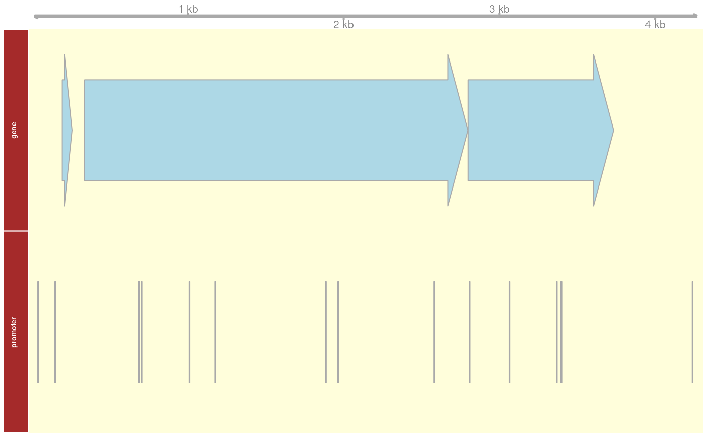

regutools: an R package for the extraction of gene regulatory networks from RegulonDB
Joselyn Chávez
Instituto de Biotecnología, Universidad Nacional Autónoma de México, Cuernavaca, Morelos, MXEqual contributionjoselynchavezf@gmail.com
Carmina Barberena Jonas
LANGEBIO, Cinvestav, Irapuato, Guanajuato, MXEqual contributioncar.barjon@gmail.com
Jesus Emiliano Sotelo-Fonseca
LANGEBIO, Cinvestav, Irapuato, Guanajuato, MXEqual contributionjemiliano@gmail.com
Jose Alquicira Hernandez
Centro de Ciencias Genómicas, Universidad Nacional Autónoma de México, Cuernavaca, Morelos, MXUniversity of Queensland, Brisbane, QLD, AUHeladia Salgado
Centro de Ciencias Genómicas, Universidad Nacional Autónoma de México, Cuernavaca, Morelos, MXheladia@ccg.unam.mx
Leonardo Collado-Torres
Lieber Institute for Brain Development, Johns Hopkins Medical Campus, Baltimore, MD, USCenter for Computational Biology, Johns Hopkins University, Baltimore, MD, USCo-corresponding authorlcolladotor@gmail.com
Alejandro Reyes
Dana Farber Cancer Institute, Boston, MA, USCo-corresponding authoralejandro.reyes.ds@gmail.com
10 December 2024
Source:vignettes/regutools.Rmd
regutools.RmdBasics
Install regutools
R is an open-source statistical environment which can be
easily modified to enhance its functionality via packages. regutools
is a R package available via Bioconductor. R
can be installed on any operating system from CRAN after which you can install
regutools
by using the following commands in your R session:
if (!requireNamespace("BiocManager", quietly = TRUE)) {
install.packages("BiocManager")
}
BiocManager::install("regutools")
## Check that you have a valid Bioconductor installation
BiocManager::valid()Required knowledge
regutools is based on many other packages and in particular in those that have implemented the infrastructure needed for dealing with genomic and sequence data. That is, packages like Biostrings that allow you to work with sequences and GenomicRanges for data on genomic coordinates. A regutools user is not expected to deal with those packages directly but will need to be familiar with them to understand the results regutools generates. Furthermore, it’ll be useful for the user to know the syntax of AnnotationHub (Morgan and Shepherd, 2024) in order to query and load the data provided by this package.
If you are asking yourself the question “Where do I start using Bioconductor?” you might be interested in this blog post.
Asking for help
As package developers, we try to explain clearly how to use our
packages and in which order to use the functions. But R and
Bioconductor have a steep learning curve so it is critical
to learn where to ask for help. The blog post quoted above mentions some
but we would like to highlight the Bioconductor support site
as the main resource for getting help regarding Bioconductor. Other
alternatives are available such as creating GitHub issues and tweeting.
However, please note that if you want to receive help you should adhere
to the posting
guidelines. It is particularly critical that you provide a small
reproducible example and your session information so package developers
can track down the source of the error.
Citing regutools
We hope that regutools will be useful for your research. Please use the following information to cite the package and the overall approach. Thank you!
## Citation info
citation("regutools")
#> To cite package 'regutools' in publications use:
#>
#> Chávez J, Barberena-Jonas C, Sotelo-Fonseca JE, Alquicira-Hernandez
#> J, Salgado H, Collado-Torres L, Reyes A (2024). _regutools: an R
#> package for data extraction from RegulonDB_.
#> doi:10.18129/B9.bioc.regutools
#> <https://doi.org/10.18129/B9.bioc.regutools>,
#> https://github.com/comunidadbioinfo/regutools - R package version
#> 1.19.0, <http://www.bioconductor.org/packages/regutools>.
#>
#> Chávez J, Barberena-Jonas C, Sotelo-Fonseca JE, Alquicira-Hernandez
#> J, Salgado H, Collado-Torres L, Reyes A (2020). "Programmatic access
#> to bacterial regulatory networks with regutools." _Bioinformatics_.
#> doi:10.1093/bioinformatics/btaa575
#> <https://doi.org/10.1093/bioinformatics/btaa575>,
#> <https://academic.oup.com/bioinformatics/advance-article-abstract/doi/10.1093/bioinformatics/btaa575/5861528>.
#>
#> To see these entries in BibTeX format, use 'print(<citation>,
#> bibtex=TRUE)', 'toBibtex(.)', or set
#> 'options(citation.bibtex.max=999)'.Overview
Escherichia coli K-12 (E. coli) is the best bacterial organism studied to date. Thousands of papers have been published using E. coli as a model system asking how genes are regulated. The throughput of these experiments range from single-gene studies to whole-genome approaches. Twenty years ago, the database RegulonDB started collecting, curating and organizing this information into a centralized resource. Thanks to this huge efforts, researchers have had an easy way to access all these data in a database, facilitating the advancements of complete fields, such as systems biology.
The analysis of high-throughput experiments -such as RNA-seq or ChIP-seq- often requires the integration of databases such as RegulonDB in order to give biological interpretations to these data. The regutools package is designed to facilitate such integration by providing programmatic access to RegulonDB within the R environment (Chávez, Barberena-Jonas, Sotelo-Fonseca, Alquicira-Hernandez, Salgado, Collado-Torres, and Reyes, 2020). The package retrieves information from the RegulonDB database into Bioconductor objects, ready for downstream analyses.
The package defines the object regulondb, which is a
data structure that contains the path to a SQLite database
retrieved from RegulonDB along with metadata such as database
version and reference genome. The function
connect_database() will retrieve the latest version of the
database and connect to it. It will download the database using AnnotationHub
or a backup mechanism if necessary. The regutools package
contains functions with the most popular queries to regutools,
such as retrieving information of which gene targets are regulated by a
transcription factor. But users can also design queries that are
specific to their analyses. This vignette describes how to use the
provided functions and how to design programmatic queries to
regutools. The general syntax of the function calls of this
package is
result <- functionCalled( regulondb, arguments ).
The regulondb object
The regulondb object is an extension of an
SQLiteConnection class that host a connection to a
database with the table structure defined in the RegulonDB
database. It contains additional slots that specify the organism, genome
version and database version. The function regulondb() is
the constructor function of regulondb objects. This
function receives as input a file path to the database file as well as
information about the annotation as character vectors.
library("regutools")
## Other packages used
library("Biostrings")
## Connect to the RegulonDB database
regulondb_conn <- connect_database()
## Build a regulondb object
e_coli_regulondb <-
regulondb(
database_conn = regulondb_conn,
organism = "E.coli",
database_version = "1",
genome_version = "1"
)
e_coli_regulondb
#> regulondb object
#> organism: E.coli
#> genome_build: 1
#> database_version: 1
#> database_conn: /github/home/.cache/R/BiocFileCache/21f7105480a3_regulondb_v10.8_sqlite.db%3Fdl%3D1In order to get an overview of the tables present in a
regulondb object, we can use the function
list_datasets(). This function will output all the
available tables (datasets) that can be used to build queries.
list_datasets(e_coli_regulondb)
#> [1] "DNA_OBJECTS" "GENE" "NETWORK"
#> [4] "OPERON" "PROMOTER" "REGULONDB_OBJECTS"
#> [7] "TF" "TU"For each table in the database, users can explore the fields (or
attributes) of each table using the function
list_attributes.
head(list_attributes(e_coli_regulondb, "GENE"), 8)
#> [1] "id" "name" "bnumber" "gi" "synonyms" "posleft" "posright"
#> [8] "strand"Retrieving data
Since the regulondb object is an extension of the
SQLiteConnection, users can retrieve data from a
regulondb object using the function dbGetQuery().
Additionally, this package provides a wrapper function to build queries
to the database. This function is called get_dataset() and
has a very similar syntax to the getBM() function from the
biomaRt package. The main arguments of the get_dataset()
function are a regulondb object, a dataset (or table) of the
database, the fields of the dataset to retrieve (attributes) and filters
to specify what information to get. The code below shows an example
where three attributes from the dataset “GENE” for the
genes araC, crp and lacI. Note that if the
filters= parameter is empty, the function will retrieve all
the hits it find in the database.
get_dataset(
regulondb = e_coli_regulondb,
dataset = "GENE",
attributes = c("posleft", "posright", "strand", "name"),
filters = list("name" = c("araC", "crp", "lacI"))
)
#> regulondb_result with 3 rows and 4 columns
#> posleft posright strand name
#> <integer> <integer> <character> <character>
#> 1 70387 71265 forward araC
#> 2 3486120 3486752 forward crp
#> 3 366428 367510 reverse lacISome of the filters, such as posright or posleft,
can be filtered by specifying intervals. For example, the code below
indicates that all the start positions *posright” should be between
position 1 and position 5000 of the genome. The parameter
inverval= is used to specify that the filter for that field
will be defined by an interval rather than a exact match.
get_dataset(
e_coli_regulondb,
attributes = c("posright", "name"),
filters = list("posright" = c(1, 5000)),
interval = "posright",
dataset = "GENE"
)
#> regulondb_result with 3 rows and 2 columns
#> posright name
#> <integer> <character>
#> 1 2799 thrA
#> 2 3733 thrB
#> 3 255 thrLThe regulondb_result object and integration into the BioC ecosystem
By default, the function get_dataset() outputs a
regulondb_result object, which is an extension of a
DataFrame that stores information about the query used
to generate this object. This additional information includes the
organism name, the database and genome versions, and the table (or
dataset) of the regulondb object that was queried by
get_dataset().
res <- get_dataset(
regulondb = e_coli_regulondb,
dataset = "GENE",
attributes = c("posleft", "posright", "strand", "name"),
filters = list("name" = c("araC", "crp", "lacI"))
)
slotNames(res)
#> [1] "organism" "genome_version" "database_version" "dataset"
#> [5] "rownames" "nrows" "elementType" "elementMetadata"
#> [9] "metadata" "listData"To enable integration with other Bioconductor packages, we provide
the function convert_to_granges() which converts a
regulondb_result object into a GRanges
object whenever possible. For example, the result stored in the variable
res has genomic coordinates and it is thus possible convert
res into a GRanges object.
convert_to_granges(res)
#> GRanges object with 3 ranges and 1 metadata column:
#> seqnames ranges strand | name
#> <Rle> <IRanges> <Rle> | <character>
#> [1] E.coli 70387-71265 + | araC
#> [2] E.coli 3486120-3486752 + | crp
#> [3] E.coli 366428-367510 - | lacI
#> -------
#> seqinfo: 1 sequence from an unspecified genome; no seqlengthsAn alternative way to get to the same result is to use the parameter
output_format= directly in the function
get_dataset().
get_dataset(
regulondb = e_coli_regulondb,
dataset = "GENE",
attributes = c("posleft", "posright", "strand", "name"),
filters = list("name" = c("araC", "crp", "lacI")),
output_format = "GRanges"
)
#> GRanges object with 3 ranges and 1 metadata column:
#> seqnames ranges strand | name
#> <Rle> <IRanges> <Rle> | <character>
#> [1] E.coli 70387-71265 + | araC
#> [2] E.coli 3486120-3486752 + | crp
#> [3] E.coli 366428-367510 - | lacI
#> -------
#> seqinfo: 1 sequence from an unspecified genome; no seqlengthsIn a similar manner, the function
convert_to_biostrings() converts regulondb
objects into objects from the Biostrings
package. Possible outputs of convert_to_biostrings() are
DNAStringSet objects if seq_type="DNA" or
a BStringSet if seq_type="product".
res_dnastring <- get_dataset(
regulondb = e_coli_regulondb,
dataset = "GENE",
attributes = c("posleft", "posright", "strand", "name", "dna_sequence"),
filters = list("name" = c("araC", "crp", "lacI"))
)
res_dnastring <-
convert_to_biostrings(res_dnastring, seq_type = "DNA")
res_dnastring
#> DNAStringSet object of length 3:
#> width seq
#> [1] 879 ATGGCTGAAGCGCAAAATGATCCCCTGCTGCCGG...AAAGTGAATGATGTAGCCGTCAAGTTGTCATAA
#> [2] 633 ATGGTGCTTGGCAAACCGCAAACAGACCCGACTC...GGTAAAACCATCGTCGTTTACGGCACTCGTTAA
#> [3] 1083 GTGAAACCAGTAACGTTATACGATGTCGCAGAGT...CGACAGGTTTCCCGACTGGAAAGCGGGCAGTGA
GenomicRanges::mcols(res_dnastring)
#> regulondb_result with 3 rows and 4 columns
#> posleft posright strand name
#> <integer> <integer> <character> <character>
#> 1 70387 71265 forward araC
#> 2 3486120 3486752 forward crp
#> 3 366428 367510 reverse lacI
res_prodstring <- get_dataset(
regulondb = e_coli_regulondb,
dataset = "GENE",
attributes = c("posleft", "posright", "strand", "name", "product_sequence"),
filters = list("name" = c("araC", "crp", "lacI"))
)
res_prodstring <-
convert_to_biostrings(res_prodstring, seq_type = "product")
mcols(res_prodstring)
#> regulondb_result with 3 rows and 4 columns
#> posleft posright strand name
#> <integer> <integer> <character> <character>
#> 1 70387 71265 forward araC
#> 2 3486120 3486752 forward crp
#> 3 366428 367510 reverse lacIAs with the GRanges output mentioned above, it is
possible for the output of get_dataset() to be a
DNAStringSet object by specifying the parameter
output_format="DNAStringSet" or a
BStringSet object by specifying
output_format="BStringSet". Note that the functions to
convert regulondb_result objects will throw errors if
there is insufficient information for the coercion to occur. For
example, we will get an error if we try to convert into a
GRanges object when genomic coordinates are missing
from the regulondb_result object.
Building your own queries
In the regutools package, we have implemented features that are commonly used when querying data from databases: filtering results by partial matching, filtering by numeric intervals, and building complex queries.
Partial matching
The code below illustrates the concept of partial matching, in which
by setting the parameter partialmatch= to
"name", the query returns all the gene name in which the
word ara is contained.
get_dataset(
e_coli_regulondb,
attributes = c("posright", "name"),
filters = list("name" = "ara"),
partialmatch = "name",
dataset = "GENE"
)
#> regulondb_result with 13 rows and 2 columns
#> posright name
#> <integer> <character>
#> 1 68337 araA
#> 2 70048 araB
#> 3 71265 araC
#> 4 66550 araD
#> 5 2982182 araE
#> ... ... ...
#> 9 412481 araJ
#> 10 30799 carA
#> 11 2917813 barA
#> 12 1619957 marA
#> 13 939337 rarANote that setting the parameter partialmatch= to
NULL will only return genes where the name string is
identical to ara.
Filtering by numeric intervals
In addition to partial matching, queries can be filtered by numeric
intervals. For example, in the code below, the parameter
interv= is set to "posright". By doing this
assignment, we are specifying that the values for
"posright" must lie between the values of
posright specified in the filter= parameter.
Thus, the result of this query will be genes whose right positions lie
between the coordinates 2000 and 4000000. Note that the use of the
interv= parameter in the code below is equivalent to
setting the parameter output_format= to
"GRanges" and further subsetting the GRanges
object using the function subsetByOverlaps().
get_dataset(
e_coli_regulondb,
attributes = c("name", "strand", "posright", "product_name"),
dataset = "GENE",
filters = list(posright = c("2000", "4000000")),
interval = "posright"
)
#> regulondb_result with 3963 rows and 4 columns
#> name strand posright product_name
#> <character> <character> <integer> <character>
#> 1 modB forward 796551 molybdate ABC transp..
#> 2 cysZ forward 2532224 sulfate:H<sup>+</sup..
#> 3 dfp forward 3813951 fused 4'-phosphopant..
#> 4 hisM reverse 2425233 lysine/arginine/orni..
#> 5 rhsE forward 1529938 RhsE protein in rhs ..
#> ... ... ... ... ...
#> 3959 yqfH reverse 3033010 protein YqfH
#> 3960 yliM forward 850397 protein YliM
#> 3961 ynfS forward 1642211 Qin prophage; protei..
#> 3962 ylcJ forward 568844 protein YlcJ
#> 3963 sdhX forward 765150 small regulatory RNA..Retrieving genomic elements
Based on genomic coordinates, the code below retrieves all genomic elements whose positions lie between the coordinates provided as a GRanges object. If no aditional parameters are provided, the result will retrieve genes that relies within the first 5000pb from the E. coli genome.
get_dna_objects(e_coli_regulondb)
#> GRanges object with 3 ranges and 4 metadata columns:
#> seqnames ranges strand | id type name
#> <Rle> <IRanges> <Rle> | <character> <character> <character>
#> [1] E.coli 337-2799 + | ECK120000987 gene thrA
#> [2] E.coli 2801-3733 + | ECK120000988 gene thrB
#> [3] E.coli 190-255 + | ECK120001251 gene thrL
#> description
#> <character>
#> [1] fused aspartate kina..
#> [2] homoserine kinase
#> [3] <i>thr</i> operon le..
#> -------
#> seqinfo: 1 sequence from an unspecified genome; no seqlengthsEspecific genomic positions can be provided within the parameter
grange. It is important to provide a genomic range that
covers as minimal the length of one genomic element.
grange <- GenomicRanges::GRanges(
"chr",
IRanges::IRanges(5000, 10000)
)
get_dna_objects(e_coli_regulondb, grange)
#> GRanges object with 3 ranges and 4 metadata columns:
#> seqnames ranges strand | id type name
#> <Rle> <IRanges> <Rle> | <character> <character> <character>
#> [1] E.coli 337-2799 + | ECK120000987 gene thrA
#> [2] E.coli 2801-3733 + | ECK120000988 gene thrB
#> [3] E.coli 190-255 + | ECK120001251 gene thrL
#> description
#> <character>
#> [1] fused aspartate kina..
#> [2] homoserine kinase
#> [3] <i>thr</i> operon le..
#> -------
#> seqinfo: 1 sequence from an unspecified genome; no seqlengthsAditional genomic elements such as “-35 promoter box”, “gene”, “promoter”, “Regulatory Interaction”, “sRNA interaction”, or “terminator” can be selected.
grange <- GenomicRanges::GRanges(
"chr",
IRanges::IRanges(5000, 10000)
)
get_dna_objects(e_coli_regulondb, grange, elements = c("gene", "promoter"))
#> GRanges object with 19 ranges and 4 metadata columns:
#> seqnames ranges strand | id type
#> <Rle> <IRanges> <Rle> | <character> <character>
#> [1] E.coli 337-2799 + | ECK120000987 gene
#> [2] E.coli 2801-3733 + | ECK120000988 gene
#> [3] E.coli 190-255 + | ECK120001251 gene
#> [4] E.coli 148 + | ECK120010236 promoter
#> [5] E.coli 38 + | ECK125230824 promoter
#> ... ... ... ... . ... ...
#> [15] E.coli 3066 + | ECK125230834 promoter
#> [16] E.coli 3368 + | ECK125230835 promoter
#> [17] E.coli 3396 + | ECK125230836 promoter
#> [18] E.coli 3401 + | ECK125230837 promoter
#> [19] E.coli 4241 + | ECK125230838 promoter
#> name description
#> <character> <character>
#> [1] thrA fused aspartate kina..
#> [2] thrB homoserine kinase
#> [3] thrL <i>thr</i> operon le..
#> [4] thrLp promoter with .. thrLp promoter with ..
#> [5] TSS_1 promoter with .. TSS_1 promoter with ..
#> ... ... ...
#> [15] TSS_12 promoter with.. TSS_12 promoter with..
#> [16] TSS_13 promoter with.. TSS_13 promoter with..
#> [17] TSS_14 promoter with.. TSS_14 promoter with..
#> [18] TSS_15 promoter with.. TSS_15 promoter with..
#> [19] TSS_16 promoter with.. TSS_16 promoter with..
#> -------
#> seqinfo: 1 sequence from an unspecified genome; no seqlengthsEvenmore, the genomic elements retrieved can be observed in a Genome Browser-like plot. The genomic elements are annotated using a UCSC genome as reference, it is important to provide a valid chromosome name for annotation purpose.
e_coli_regulondb <-
regulondb(
database_conn = regulondb_conn,
organism = "chr",
database_version = "1",
genome_version = "1"
)
grange <- GenomicRanges::GRanges("chr", IRanges::IRanges(5000, 10000))
plot_dna_objects(e_coli_regulondb, grange, elements = c("gene", "promoter"))
Complex filters
The examples so far have considered queries in which the results are
filtered according to single fields from tables. In order to build
queries with filters from more than one field, several filters names can
be passed as a list to the filters= argument. Additionally
the and= argument is used to specify whether the filtering
conditions of the result of the query must be satisfied
(and=TRUE) or if satisfying a single condition is enough
(and=FALSE).
For example, the code below extracts the genes where either
name or product_name contain the word
Ara or Ara, respectively, if the gene is in the
forward strand or if the right position of the gene is between 2000 and
40000000.
nrow(
get_dataset(
e_coli_regulondb,
attributes = c("name", "strand", "posright", "product_name"),
dataset = "GENE",
filters = list(
name = c("ARA"),
product_name = c("Ara"),
strand = c("forward"),
posright = c("2000", "4000000")
),
and = FALSE,
partialmatch = c("name", "product_name"),
interval = "posright"
)
)
#> [1] 2331The query below, which is identical to the query above except the
and= is set to TRUE, returns the genes where
all of the specified conditions are satisfied.
nrow(
get_dataset(
e_coli_regulondb,
attributes = c("name", "strand", "posright", "product_name"),
dataset = "GENE",
filters = list(
name = c("ARA"),
product_name = c("Ara"),
strand = c("forward"),
posright = c("2000", "4000000")
),
and = TRUE,
partialmatch = c("name", "product_name"),
interval = "posright"
)
)
#> [1] 3Functions with implement popular queries
The regutools package provides functions that encode the most frequent queries that are submitted to the RegulonDB web resource.
Extracting regulatory networks
One of the most important information that the RegulonDB
database contains are manually curated regulatory networks. The
regutools package exports the function
get_gene_regulators(), which inputs a vector of gene names
and outputs information about what are the transcription factors that
regulate such genes together with the regulatory effect (activator,
repressor or dual).
get_gene_regulators(e_coli_regulondb, c("araC", "fis", "crp"))
#> regulondb_result with 9 rows and 3 columns
#> genes regulators effect
#> <character> <character> <character>
#> 1 crp Fis -
#> 2 fis Fis -
#> 3 araC CRP +
#> 4 crp CRP +/-
#> 5 fis CRP +/-
#> 6 araC AraC +/-
#> 7 crp Cra +
#> 8 araC XylR -
#> 9 fis IHF +Similarly, the get_regulatory_network() function
retrieves all the regulatory network from a regulondb
object. By default, the output will be a list of transcription
factor-gene pairs, indicating which transcription factor regulates which
gene.
head(get_regulatory_network(e_coli_regulondb))
#> regulondb_result with 6 rows and 3 columns
#> regulator regulated effect
#> <character> <character> <character>
#> 1 Fis adhE +
#> 2 Fis osmE -
#> 3 Fis ansB -
#> 4 Fis apaG +
#> 5 Fis apaH +
#> 6 Fis bglB -But users can also set the parameter type= to
"GENE-GENE" or "TF-GENE" to retrieve gene-gene
regulatory networks or transcription factor-transcription factor
regulatory networks, respectively.
Users can also use the get_regulatory_summary() to
retrieve a summary of the transcription factor regulated the expression
of a set of given genes. The parameter gene_regulators can
receive either a vector of gene names or the output of a call to the
function get_gene_regulators(). The resulting output is a
regulondb_result object in which each row shows a transcription
factor, and the columns display information about the number, percentage
and regulatory activity exerted to the genes.
get_regulatory_summary(e_coli_regulondb,
gene_regulators = c("araC", "modB")
)
#> regulondb_result with 4 rows and 7 columns
#> TF Regulated_genes_per_TF Percent Activator Repressor
#> <character> <character> <character> <character> <character>
#> 1 AraC 1 20 0 0
#> 2 CRP 2 40 2 0
#> 3 ModE 1 20 0 1
#> 4 XylR 1 20 0 1
#> Dual Regulated_genes
#> <character> <character>
#> 1 1 araC
#> 2 0 modB, araC
#> 3 0 modB
#> 4 0 araCVisualizing networks using cytoscape
Software tools such as Cytoscape are often useful
for interactive exploration of data and visualization of networks. The
function get_regulatory_network() has a parameter
cytograph= that if set to TRUE, it will
visualize the network in a cytoscape session. Of note, this feature will
only work if the user has Cytoscape open in their computer.
get_regulatory_network(e_coli_regulondb, cytograph = TRUE)Transcription factor binding sites
Another common request to the RegulonDB database is to
obtain the genomic coordinates and sequences of the DNA binding sites
for a given transcription factor. This query is implemented in the
function get_binding_sites(), in which the results are
formatted according to the parameter output_format= as
either a GRanges object or a Biostrings object.
get_binding_sites(e_coli_regulondb, transcription_factor = "AraC")
#> GRanges object with 15 ranges and 1 metadata column:
#> seqnames ranges strand |
#> <Rle> <IRanges> <Rle> |
#> ECK120015742-araB-araC chr 70110-70126 + |
#> ECK120012328-araB-araC chr 70131-70147 + |
#> ECK120012320-araB-araC chr 70184-70200 - |
#> ECK120012323-araB-araC chr 70205-70221 - |
#> ECK120012603-araB-araC chr 70342-70358 - |
#> ... ... ... ... .
#> ECK120012333-araF chr 1986396-1986412 - |
#> ECK120012915-araE chr 2982244-2982260 - |
#> ECK120012913-araE chr 2982265-2982281 - |
#> ECK125108641-xylA chr 3730824-3730840 - |
#> ECK125108643-xylA chr 3730847-3730863 - |
#> sequence
#> <character>
#> ECK120015742-araB-araC ataaaaagcgTCAGGTAGGA..
#> ECK120012328-araB-araC ccgctaatctTATGGATAAA..
#> ECK120012320-araB-araC tctataatcaCGGCAGAAAA..
#> ECK120012323-araB-araC caaaaacgcgTAACAAAAGT..
#> ECK120012603-araB-araC attcagagaaGAAACCAATT..
#> ... ...
#> ECK120012333-araF ccaaagacaaCAAGGATTTC..
#> ECK120012915-araE tccatatttaTGCTGTTTCC..
#> ECK120012913-araE cgacatgtcgCAGCAATTTA..
#> ECK125108641-xylA taacataattGAGCAACTGA..
#> ECK125108643-xylA attatctcaaTAGCAGTGTG..
#> -------
#> seqinfo: 1 sequence from an unspecified genome; no seqlengths
get_binding_sites(e_coli_regulondb,
transcription_factor = "AraC",
output_format = "Biostrings"
)
#> DNAStringSet object of length 15:
#> width seq names
#> [1] 37 ATAAAAAGCGTCAGGTAGGATCCGCTAATCTTATGGA ECK120015742-araB...
#> [2] 37 CCGCTAATCTTATGGATAAAAATGCTATGGCATAGCA ECK120012328-araB...
#> [3] 37 TCTATAATCACGGCAGAAAAGTCCACATTGATTATTT ECK120012320-araB...
#> [4] 37 CAAAAACGCGTAACAAAAGTGTCTATAATCACGGCAG ECK120012323-araB...
#> [5] 37 ATTCAGAGAAGAAACCAATTGTCCATATTGCATCAGA ECK120012603-araB...
#> ... ... ...
#> [11] 37 CCAAAGACAACAAGGATTTCCAGGCTAATCTTATGGA ECK120012333-araF
#> [12] 37 TCCATATTTATGCTGTTTCCGACCTGACACCTGCGTG ECK120012915-araE
#> [13] 37 CGACATGTCGCAGCAATTTAATCCATATTTATGCTGT ECK120012913-araE
#> [14] 37 TAACATAATTGAGCAACTGAAAGGGAGTGCCCAATAT ECK125108641-xylA
#> [15] 37 ATTATCTCAATAGCAGTGTGAAATAACATAATTGAGC ECK125108643-xylAA note about CDSB
This was a project accomplished by members of the Community of Bioinformatics Software Developers (CDSB in Spanish). In part CDSB was formed to help R users in Latin America become R/Bioconductor developers. For more information about CDSB, the CDSB workshops or its online community, please check the CDSB website which is available in both Spanish and English.

Reproducibility
The regutools package (Chávez, Barberena-Jonas, Sotelo-Fonseca, Alquicira-Hernandez, Salgado, Collado-Torres, and Reyes, 2024) was made possible thanks to:
- R (R Core Team, 2024)
- AnnotationDbi (Pagès, Carlson, Falcon, and Li, 2024)
- AnnotationHub (Morgan and Shepherd, 2024)
- BiocFileCache (Shepherd and Morgan, 2024)
- BiocStyle (Oleś, 2024)
- Biostrings (Pagès, Aboyoun, Gentleman, and DebRoy, 2024)
- DBI (R Special Interest Group on Databases (R-SIG-DB), Wickham, and Müller, 2024)
- GenomicRanges (Lawrence, Huber, Pagès, Aboyoun, Carlson, Gentleman, Morgan, and Carey, 2013)
- Gviz
- IRanges (Lawrence, Huber, Pagès et al., 2013)
- knitr (Xie, 2014)
- RCy3 (Gustavsen, A., Pai, Shraddha, Isserlin, Ruth, Demchak, Barry, Pico, and R., 2019)
- RefManageR (McLean, 2017)
- rmarkdown (Allaire, Xie, Dervieux, McPherson, Luraschi, Ushey, Atkins, Wickham, Cheng, Chang, and Iannone, 2024)
- RSQLite (Müller, Wickham, James, and Falcon, 2024)
- S4Vectors (Pagès, Lawrence, and Aboyoun, 2024)
- sessioninfo (Wickham, Chang, Flight, Müller, and Hester, 2021)
- testthat (Wickham, 2011)
Code for creating the vignette
## Create the vignette
library("rmarkdown")
system.time(render("regutools.Rmd"))
## Extract the R code
library("knitr")
knit("regutools.Rmd", tangle = TRUE)Date the vignette was generated.
#> [1] "2024-12-10 21:19:02 UTC"Wallclock time spent generating the vignette.
#> Time difference of 19.314 secsR session information.
#> ─ Session info ───────────────────────────────────────────────────────────────────────────────────────────────────────
#> setting value
#> version R version 4.4.2 (2024-10-31)
#> os Ubuntu 24.04.1 LTS
#> system x86_64, linux-gnu
#> ui X11
#> language en
#> collate en_US.UTF-8
#> ctype en_US.UTF-8
#> tz UTC
#> date 2024-12-10
#> pandoc 3.5 @ /usr/bin/ (via rmarkdown)
#>
#> ─ Packages ───────────────────────────────────────────────────────────────────────────────────────────────────────────
#> package * version date (UTC) lib source
#> abind 1.4-8 2024-09-12 [1] RSPM (R 4.4.0)
#> AnnotationDbi 1.68.0 2024-10-29 [1] Bioconductor 3.20 (R 4.4.2)
#> AnnotationFilter 1.30.0 2024-10-29 [1] Bioconductor 3.20 (R 4.4.2)
#> AnnotationHub 3.14.0 2024-10-29 [1] Bioconductor 3.20 (R 4.4.2)
#> backports 1.5.0 2024-05-23 [1] RSPM (R 4.4.0)
#> base64enc 0.1-3 2015-07-28 [2] RSPM (R 4.4.0)
#> base64url 1.4 2018-05-14 [1] RSPM (R 4.4.0)
#> bibtex 0.5.1 2023-01-26 [1] RSPM (R 4.4.0)
#> Biobase 2.66.0 2024-10-29 [1] Bioconductor 3.20 (R 4.4.2)
#> BiocFileCache 2.14.0 2024-10-29 [1] Bioconductor 3.20 (R 4.4.2)
#> BiocGenerics * 0.52.0 2024-10-29 [1] Bioconductor 3.20 (R 4.4.2)
#> BiocIO 1.16.0 2024-10-29 [1] Bioconductor 3.20 (R 4.4.2)
#> BiocManager 1.30.25 2024-08-28 [2] CRAN (R 4.4.2)
#> BiocParallel 1.40.0 2024-10-29 [1] Bioconductor 3.20 (R 4.4.2)
#> BiocStyle * 2.34.0 2024-10-29 [1] Bioconductor 3.20 (R 4.4.2)
#> BiocVersion 3.20.0 2024-10-21 [2] Bioconductor 3.20 (R 4.4.2)
#> biomaRt 2.62.0 2024-10-29 [1] Bioconductor 3.20 (R 4.4.2)
#> Biostrings * 2.74.0 2024-10-29 [1] Bioconductor 3.20 (R 4.4.2)
#> biovizBase 1.54.0 2024-10-29 [1] Bioconductor 3.20 (R 4.4.2)
#> bit 4.5.0.1 2024-12-03 [1] RSPM (R 4.4.0)
#> bit64 4.5.2 2024-09-22 [1] RSPM (R 4.4.0)
#> bitops 1.0-9 2024-10-03 [1] RSPM (R 4.4.0)
#> blob 1.2.4 2023-03-17 [1] RSPM (R 4.4.0)
#> bookdown 0.41 2024-10-16 [1] RSPM (R 4.4.0)
#> BSgenome 1.74.0 2024-10-29 [1] Bioconductor 3.20 (R 4.4.2)
#> bslib 0.8.0 2024-07-29 [2] RSPM (R 4.4.0)
#> cachem 1.1.0 2024-05-16 [2] RSPM (R 4.4.0)
#> caTools 1.18.3 2024-09-04 [1] RSPM (R 4.4.0)
#> checkmate 2.3.2 2024-07-29 [1] RSPM (R 4.4.0)
#> cli 3.6.3 2024-06-21 [2] RSPM (R 4.4.0)
#> cluster 2.1.7 2024-12-08 [3] RSPM (R 4.4.0)
#> codetools 0.2-20 2024-03-31 [3] CRAN (R 4.4.2)
#> colorspace 2.1-1 2024-07-26 [1] RSPM (R 4.4.0)
#> crayon 1.5.3 2024-06-20 [2] RSPM (R 4.4.0)
#> curl 6.0.1 2024-11-14 [2] RSPM (R 4.4.0)
#> data.table 1.16.4 2024-12-06 [1] RSPM (R 4.4.0)
#> DBI 1.2.3 2024-06-02 [1] RSPM (R 4.4.0)
#> dbplyr 2.5.0 2024-03-19 [1] RSPM (R 4.4.0)
#> DelayedArray 0.32.0 2024-10-29 [1] Bioconductor 3.20 (R 4.4.2)
#> deldir 2.0-4 2024-02-28 [1] RSPM (R 4.4.0)
#> desc 1.4.3 2023-12-10 [2] RSPM (R 4.4.0)
#> dichromat 2.0-0.1 2022-05-02 [1] RSPM (R 4.4.0)
#> digest 0.6.37 2024-08-19 [2] RSPM (R 4.4.0)
#> dplyr 1.1.4 2023-11-17 [1] RSPM (R 4.4.0)
#> ensembldb 2.30.0 2024-10-29 [1] Bioconductor 3.20 (R 4.4.2)
#> evaluate 1.0.1 2024-10-10 [2] RSPM (R 4.4.0)
#> fansi 1.0.6 2023-12-08 [2] RSPM (R 4.4.0)
#> fastmap 1.2.0 2024-05-15 [2] RSPM (R 4.4.0)
#> filelock 1.0.3 2023-12-11 [1] RSPM (R 4.4.0)
#> foreign 0.8-87 2024-06-26 [3] CRAN (R 4.4.2)
#> Formula 1.2-5 2023-02-24 [1] RSPM (R 4.4.0)
#> fs 1.6.5 2024-10-30 [2] RSPM (R 4.4.0)
#> generics 0.1.3 2022-07-05 [1] RSPM (R 4.4.0)
#> GenomeInfoDb * 1.42.1 2024-11-28 [1] Bioconductor 3.20 (R 4.4.2)
#> GenomeInfoDbData 1.2.13 2024-12-10 [1] Bioconductor
#> GenomicAlignments 1.42.0 2024-10-29 [1] Bioconductor 3.20 (R 4.4.2)
#> GenomicFeatures 1.58.0 2024-10-29 [1] Bioconductor 3.20 (R 4.4.2)
#> GenomicRanges 1.58.0 2024-10-29 [1] Bioconductor 3.20 (R 4.4.2)
#> ggplot2 3.5.1 2024-04-23 [1] RSPM (R 4.4.0)
#> glue 1.8.0 2024-09-30 [2] RSPM (R 4.4.0)
#> gplots 3.2.0 2024-10-05 [1] RSPM (R 4.4.0)
#> graph 1.84.0 2024-10-29 [1] Bioconductor 3.20 (R 4.4.2)
#> gridExtra 2.3 2017-09-09 [1] RSPM (R 4.4.0)
#> gtable 0.3.6 2024-10-25 [1] RSPM (R 4.4.0)
#> gtools 3.9.5 2023-11-20 [1] RSPM (R 4.4.0)
#> Gviz 1.50.0 2024-10-29 [1] Bioconductor 3.20 (R 4.4.2)
#> Hmisc 5.2-1 2024-12-02 [1] RSPM (R 4.4.0)
#> hms 1.1.3 2023-03-21 [1] RSPM (R 4.4.0)
#> htmlTable 2.4.3 2024-07-21 [1] RSPM (R 4.4.0)
#> htmltools 0.5.8.1 2024-04-04 [2] RSPM (R 4.4.0)
#> htmlwidgets 1.6.4 2023-12-06 [2] RSPM (R 4.4.0)
#> httr 1.4.7 2023-08-15 [1] RSPM (R 4.4.0)
#> httr2 1.0.7 2024-11-26 [2] RSPM (R 4.4.0)
#> interp 1.1-6 2024-01-26 [1] RSPM (R 4.4.0)
#> IRanges * 2.40.1 2024-12-05 [1] Bioconductor 3.20 (R 4.4.2)
#> IRdisplay 1.1 2022-01-04 [1] RSPM (R 4.4.0)
#> IRkernel 1.3.2 2023-01-20 [1] RSPM (R 4.4.0)
#> jpeg 0.1-10 2022-11-29 [1] RSPM (R 4.4.0)
#> jquerylib 0.1.4 2021-04-26 [2] RSPM (R 4.4.0)
#> jsonlite 1.8.9 2024-09-20 [2] RSPM (R 4.4.0)
#> KEGGREST 1.46.0 2024-10-29 [1] Bioconductor 3.20 (R 4.4.2)
#> KernSmooth 2.23-24 2024-05-17 [3] CRAN (R 4.4.2)
#> knitr 1.49 2024-11-08 [2] RSPM (R 4.4.0)
#> lattice 0.22-6 2024-03-20 [3] CRAN (R 4.4.2)
#> latticeExtra 0.6-30 2022-07-04 [1] RSPM (R 4.4.0)
#> lazyeval 0.2.2 2019-03-15 [1] RSPM (R 4.4.0)
#> lifecycle 1.0.4 2023-11-07 [2] RSPM (R 4.4.0)
#> lubridate 1.9.4 2024-12-08 [1] RSPM (R 4.4.0)
#> magrittr 2.0.3 2022-03-30 [2] RSPM (R 4.4.0)
#> Matrix 1.7-1 2024-10-18 [3] CRAN (R 4.4.2)
#> MatrixGenerics 1.18.0 2024-10-29 [1] Bioconductor 3.20 (R 4.4.2)
#> matrixStats 1.4.1 2024-09-08 [1] RSPM (R 4.4.0)
#> memoise 2.0.1 2021-11-26 [2] RSPM (R 4.4.0)
#> mime 0.12 2021-09-28 [2] RSPM (R 4.4.0)
#> munsell 0.5.1 2024-04-01 [1] RSPM (R 4.4.0)
#> nnet 7.3-19 2023-05-03 [3] CRAN (R 4.4.2)
#> pbdZMQ 0.3-13 2024-09-17 [1] RSPM (R 4.4.0)
#> pillar 1.9.0 2023-03-22 [2] RSPM (R 4.4.0)
#> pkgconfig 2.0.3 2019-09-22 [2] RSPM (R 4.4.0)
#> pkgdown 2.1.1 2024-09-17 [2] RSPM (R 4.4.0)
#> plyr 1.8.9 2023-10-02 [1] RSPM (R 4.4.0)
#> png 0.1-8 2022-11-29 [1] RSPM (R 4.4.0)
#> prettyunits 1.2.0 2023-09-24 [2] RSPM (R 4.4.0)
#> progress 1.2.3 2023-12-06 [1] RSPM (R 4.4.0)
#> ProtGenerics 1.38.0 2024-10-29 [1] Bioconductor 3.20 (R 4.4.2)
#> purrr 1.0.2 2023-08-10 [2] RSPM (R 4.4.0)
#> R6 2.5.1 2021-08-19 [2] RSPM (R 4.4.0)
#> ragg 1.3.3 2024-09-11 [2] RSPM (R 4.4.0)
#> rappdirs 0.3.3 2021-01-31 [2] RSPM (R 4.4.0)
#> RColorBrewer 1.1-3 2022-04-03 [1] RSPM (R 4.4.0)
#> Rcpp 1.0.13-1 2024-11-02 [2] RSPM (R 4.4.0)
#> RCurl 1.98-1.16 2024-07-11 [1] RSPM (R 4.4.0)
#> RCy3 2.26.0 2024-10-29 [1] Bioconductor 3.20 (R 4.4.2)
#> RefManageR * 1.4.0 2022-09-30 [1] RSPM (R 4.4.0)
#> regutools * 1.19.0 2024-12-10 [1] Bioconductor
#> repr 1.1.7 2024-03-22 [1] RSPM (R 4.4.0)
#> restfulr 0.0.15 2022-06-16 [1] RSPM (R 4.4.0)
#> rjson 0.2.23 2024-09-16 [1] RSPM (R 4.4.0)
#> RJSONIO 1.3-1.9 2023-11-27 [1] RSPM (R 4.4.0)
#> rlang 1.1.4 2024-06-04 [2] RSPM (R 4.4.0)
#> rmarkdown 2.29 2024-11-04 [2] RSPM (R 4.4.0)
#> rpart 4.1.23 2023-12-05 [3] CRAN (R 4.4.2)
#> Rsamtools 2.22.0 2024-10-29 [1] Bioconductor 3.20 (R 4.4.2)
#> RSQLite 2.3.9 2024-12-03 [1] RSPM (R 4.4.0)
#> rstudioapi 0.17.1 2024-10-22 [2] RSPM (R 4.4.0)
#> rtracklayer 1.66.0 2024-10-29 [1] Bioconductor 3.20 (R 4.4.2)
#> S4Arrays 1.6.0 2024-10-29 [1] Bioconductor 3.20 (R 4.4.2)
#> S4Vectors * 0.44.0 2024-10-29 [1] Bioconductor 3.20 (R 4.4.2)
#> sass 0.4.9 2024-03-15 [2] RSPM (R 4.4.0)
#> scales 1.3.0 2023-11-28 [1] RSPM (R 4.4.0)
#> sessioninfo * 1.2.2 2021-12-06 [2] RSPM (R 4.4.0)
#> SparseArray 1.6.0 2024-10-29 [1] Bioconductor 3.20 (R 4.4.2)
#> stringi 1.8.4 2024-05-06 [2] RSPM (R 4.4.0)
#> stringr 1.5.1 2023-11-14 [2] RSPM (R 4.4.0)
#> SummarizedExperiment 1.36.0 2024-10-29 [1] Bioconductor 3.20 (R 4.4.2)
#> systemfonts 1.1.0 2024-05-15 [2] RSPM (R 4.4.0)
#> textshaping 0.4.1 2024-12-06 [2] RSPM (R 4.4.0)
#> tibble 3.2.1 2023-03-20 [2] RSPM (R 4.4.0)
#> tidyselect 1.2.1 2024-03-11 [1] RSPM (R 4.4.0)
#> timechange 0.3.0 2024-01-18 [1] RSPM (R 4.4.0)
#> UCSC.utils 1.2.0 2024-10-29 [1] Bioconductor 3.20 (R 4.4.2)
#> utf8 1.2.4 2023-10-22 [2] RSPM (R 4.4.0)
#> uuid 1.2-1 2024-07-29 [1] RSPM (R 4.4.0)
#> VariantAnnotation 1.52.0 2024-10-29 [1] Bioconductor 3.20 (R 4.4.2)
#> vctrs 0.6.5 2023-12-01 [2] RSPM (R 4.4.0)
#> withr 3.0.2 2024-10-28 [2] RSPM (R 4.4.0)
#> xfun 0.49 2024-10-31 [2] RSPM (R 4.4.0)
#> XML 3.99-0.17 2024-06-25 [1] RSPM (R 4.4.0)
#> xml2 1.3.6 2023-12-04 [2] RSPM (R 4.4.0)
#> XVector * 0.46.0 2024-10-29 [1] Bioconductor 3.20 (R 4.4.2)
#> yaml 2.3.10 2024-07-26 [2] RSPM (R 4.4.0)
#> zlibbioc 1.52.0 2024-10-29 [1] Bioconductor 3.20 (R 4.4.2)
#>
#> [1] /__w/_temp/Library
#> [2] /usr/local/lib/R/site-library
#> [3] /usr/local/lib/R/library
#>
#> ──────────────────────────────────────────────────────────────────────────────────────────────────────────────────────Bibliography
This vignette was generated using BiocStyle (Oleś, 2024), knitr (Xie, 2014) and rmarkdown (Allaire, Xie, Dervieux et al., 2024) running behind the scenes.
Citations made with RefManageR (McLean, 2017).
[1] J. Allaire, Y. Xie, C. Dervieux, et al. rmarkdown: Dynamic Documents for R. R package version 2.29. 2024. URL: https://github.com/rstudio/rmarkdown.
[2] J. Chávez, C. Barberena-Jonas, J. E. Sotelo-Fonseca, et al. “Programmatic access to bacterial regulatory networks with regutools”. In: Bioinformatics (2020). DOI: 10.1093/bioinformatics/btaa575. URL: https://academic.oup.com/bioinformatics/advance-article-abstract/doi/10.1093/bioinformatics/btaa575/5861528.
[3] J. Chávez, C. Barberena-Jonas, J. E. Sotelo-Fonseca, et al. regutools: an R package for data extraction from RegulonDB. https://github.com/comunidadbioinfo/regutools - R package version 1.19.0. 2024. DOI: 10.18129/B9.bioc.regutools. URL: http://www.bioconductor.org/packages/regutools.
[4] Gustavsen, J. A., Pai, et al. “RCy3: Network Biology using Cytoscape from within R”. In: F1000Research (2019). DOI: 10.12688/f1000research.20887.3.
[5] M. Lawrence, W. Huber, H. Pagès, et al. “Software for Computing and Annotating Genomic Ranges”. In: PLoS Computational Biology 9 (8 2013). DOI: 10.1371/journal.pcbi.1003118. URL: http://www.ploscompbiol.org/article/info%3Adoi%2F10.1371%2Fjournal.pcbi.1003118}.
[6] M. W. McLean. “RefManageR: Import and Manage BibTeX and BibLaTeX References in R”. In: The Journal of Open Source Software (2017). DOI: 10.21105/joss.00338.
[7] M. Morgan and L. Shepherd. AnnotationHub: Client to access AnnotationHub resources. R package version 3.14.0. 2024. DOI: 10.18129/B9.bioc.AnnotationHub. URL: https://bioconductor.org/packages/AnnotationHub.
[8] K. Müller, H. Wickham, D. A. James, et al. RSQLite: SQLite Interface for R. R package version 2.3.9, https://github.com/r-dbi/RSQLite. 2024. URL: https://rsqlite.r-dbi.org.
[9] A. Oleś. BiocStyle: Standard styles for vignettes and other Bioconductor documents. R package version 2.34.0. 2024. DOI: 10.18129/B9.bioc.BiocStyle. URL: https://bioconductor.org/packages/BiocStyle.
[10] H. Pagès, P. Aboyoun, R. Gentleman, et al. Biostrings: Efficient manipulation of biological strings. R package version 2.74.0. 2024. DOI: 10.18129/B9.bioc.Biostrings. URL: https://bioconductor.org/packages/Biostrings.
[11] H. Pagès, M. Carlson, S. Falcon, et al. AnnotationDbi: Manipulation of SQLite-based annotations in Bioconductor. R package version 1.68.0. 2024. DOI: 10.18129/B9.bioc.AnnotationDbi. URL: https://bioconductor.org/packages/AnnotationDbi.
[12] H. Pagès, M. Lawrence, and P. Aboyoun. S4Vectors: Foundation of vector-like and list-like containers in Bioconductor. R package version 0.44.0. 2024. DOI: 10.18129/B9.bioc.S4Vectors. URL: https://bioconductor.org/packages/S4Vectors.
[13] R Core Team. R: A Language and Environment for Statistical Computing. R Foundation for Statistical Computing. Vienna, Austria, 2024. URL: https://www.R-project.org/.
[14] R Special Interest Group on Databases (R-SIG-DB), H. Wickham, and K. Müller. DBI: R Database Interface. R package version 1.2.3, https://github.com/r-dbi/DBI. 2024. URL: https://dbi.r-dbi.org.
[15] L. Shepherd and M. Morgan. BiocFileCache: Manage Files Across Sessions. R package version 2.14.0. 2024. DOI: 10.18129/B9.bioc.BiocFileCache. URL: https://bioconductor.org/packages/BiocFileCache.
[16] H. Wickham. “testthat: Get Started with Testing”. In: The R Journal 3 (2011), pp. 5–10. URL: https://journal.r-project.org/archive/2011-1/RJournal_2011-1_Wickham.pdf.
[17] H. Wickham, W. Chang, R. Flight, et al. sessioninfo: R Session Information. R package version 1.2.2, https://r-lib.github.io/sessioninfo/. 2021. URL: https://github.com/r-lib/sessioninfo#readme.
[18] Y. Xie. “knitr: A Comprehensive Tool for Reproducible Research in R”. In: Implementing Reproducible Computational Research. Ed. by V. Stodden, F. Leisch and R. D. Peng. ISBN 978-1466561595. Chapman and Hall/CRC, 2014.